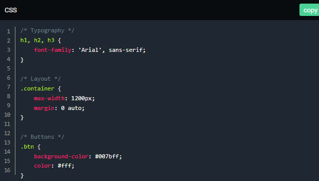
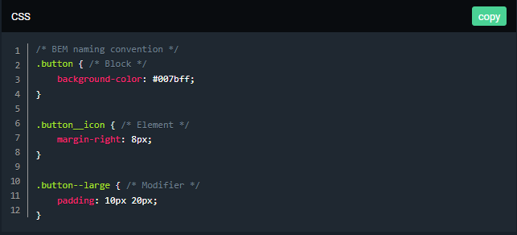

CSS là một thành phần quan trọng tạo nên các website hiện nay. Với CSS, bạn có thể tạo ra các trang web ấn tượng cho công ty của mình hoặc cho chính bạn.
Vậy CSS là gì? Ngôn ngữ CSS dùng để làm gì và tại sao CSS lại có vai trò quan trọng trong một website, hãy cùng tìm hiểu trong bài viết này nhé.
1. Khái Niệm
CSS là viết tắt của Cascading Style Sheets, là một ngôn ngữ thiết kế được sử dụng nhằm mục đích đơn giản hóa quá trình tạo nên một website. CSS được ra mắt vào năm 1996 bởi World Wide Web Consortium (W3C).
1. Bố cục của một đoạn CSS
Bố cục của một đoạn CSS chủ yếu dựa vào hình hộp với mỗi hộp chiếm những khoảng trống trên trang web với các thuộc tính chính như:
2. Cấu trúc của một đoạn CSS
Một đoạn CSS bao gồm các phần như thế này:
VD: vùng chọn { thuộc tính : giá trị; thuộc tính: giá trị; ..... }
➡ Nghĩa là nó sẽ được khai báo bằng vùng chọn, sau đó các thuộc tính và giá trị sẽ nằm bên trong cặp dấu ngoặc nhọn {}. Mỗi thuộc tính sẽ luôn có một giá trị riêng, giá trị có thể là dạng số, hoặc các tên giá trị trong danh sách có sẵn của CSS.
⭕ Định nghĩa của phần này như sau:
👉 Tất cả phần tử theo một dạng cụ thể nào đó, ví dụ phần tử tiêu đề h1.
👉 Thuộc tính id và class của các phần tử.
👉 Các phần tử dựa vào mối liên quan với các phần tử khác trong cây phân cấp tài liệu.
VD: p { color: red; text-align: center; }
3. Cách nhúng CSS vào website
Để CSS có thể thực thi trên website hoặc HTML Documents thì phải tiến hành nhúng CSS vào website. Nếu không, các định dạng CSS sẽ không thực thi trên HTML. Có 3 cách nhúng CSS vào website:
Hãy giữ code CSS của bạn được sắp xếp cẩn thận bằng cách nhóm các kiểu liên quan lại với nhau và sử dụng chú thích để làm rõ từng phần. Điều này giúp bạn dễ tìm kiếm và sửa đổi khi cần.
Sử dụng cùng một cách đặt tên cho các class và ID để mã CSS dễ đọc và quản lý. Một số quy ước thông dụng là BEM (Block, Element, Modifier) và SMACSS (Scalable and Modular Architecture for CSS).
Hãy tránh sử dụng các Selector quá phức tạp hoặc quá rộng vì chúng dễ gây chồng chéo kiểu dáng và khó bảo trì. Cách viết đơn giản sẽ giúp bạn dễ quản lý code CSS hơn trong tương lai.

Liên tục cập nhật và học hỏi các tính năng CSS mới để cải thiện kỹ năng và theo kịp các xu hướng và tiêu chuẩn mới nhất trong ngành.
Ví dụ: Các tính năng CSS mới như CSS Grid, Flexbox hay Custom Properties (CSS Variables) giúp tạo layout linh hoạt hơn.

👉 Dưới đây là ba lợi ích chính của CSS:
👍 Trước khi có CSS, các thẻ như phông chữ, màu sắc, kiểu nền, các sắp xếp phần tử, đường viền và kích thước phải được lặp lại trên mọi trang web. Đây là một quá trình rất dài tốn thời gian và công sức. Ví dụ: Nếu bạn đang phát triển một trang web lớn nơi phông chữ và thông tin màu được thêm vào mỗi trang, nó sẽ trở thành một quá trình dài và tốn kém. CSS đã được tạo ra để giải quyết vấn đề này. Đó là một khuyến cáo của W3C.
Nhờ CSS mà source code của trang Web sẽ được tổ chức gọn gàng hơn, trật tự hơn. Nội dung trang web sẽ được tách bạch hơn trong việc định dạng hiển thị. Từ đó, quá trình cập nhập nội dung sẽ dễ dàng hơn và có thể hạn chế tối thiểu làm rối cho mã HTML.
👍 Định nghĩa kiểu CSS được lưu trong các tệp CSS bên ngoài vì vậy có thể thay đổi toàn bộ trang web bằng cách thay đổi chỉ một tệp. Sử dụng CSS sẽ giúp bạn không cần thực hiện lặp lại các mô tả cho từng thành phần. Từ đó, bạn có thể tiết kiệm được tối đa thời gian làm việc với nó, làm code ngắn lại giúp kiểm soát dễ dàng hơn các lỗi không đáng có.
CSS tạo ra nhiều style khác nhau nên có thể được áp dụng với nhiều trang web, từ đó giảm tránh việc lặp lại các định dạng của các trang web giống nhau.
👍CSS cung cấp các thuộc tính chi tiết hơn HTML để định nghĩa giao diện của trang web. CSS giúp người dùng nhiều styles trên một trang web HTML nên khả năng điều chỉnh trang của bạn trở nên vô hạn.
Bạn thấy bài viết hay và hữu ích? Đừng ngại Share với bạn bè và đồng nghiệp nhé! Cảm ơn bạn 💘